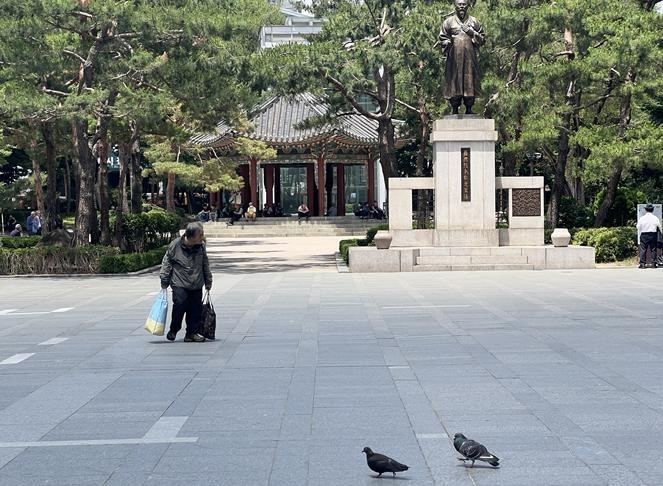
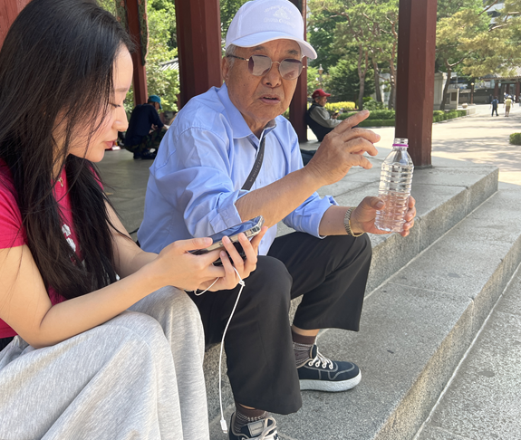

점심 시간이 지난 탑골공원은 비교적 한산했다. 공원 입구를 지나자 정자 주변으로 노인들이 앉아 있었다. 누군가는 휴대전화를 보고 있었고, 누군가는 아무 말 없이 시간을 보내고 있었다. 넓은 광장을 천천히 지나가는 사람도 보였다.
탑골공원은 오래전부터 노년층이 자주 찾는 공간으로 알려져 있다. 같은 장소를 기록한 과거 사진에는 광장 주변으로 더 많은 사람이 모여 있는 모습이 보인다. 반면 최근 촬영한 사진에서는 이전보다 사람이 줄어든 모습이 나타났다. 넓은 공간에는 여유가 생겼고, 일부 노인들은 정자 주변에 머물러 있었다.

탑골공원은 여전히 노년층이 찾는 공간이다. 하지만 같은 공간이라도 시간이 지나면서 이용 모습은 달라지고 있었다. 노년기의 생활은 단순히 거주 공간만으로 설명하기 어렵다. 병원을 이용할 수 있는지, 복지시설이 가까운지, 이동이 편리한지도 일상에 영향을 준다.
그렇다면 서울의 노년 1인 가구는 지금 살고 있는 지역에서 계속 살아갈 수 있을까. 이번 취재는 이 질문에서 시작됐다.
서울 4개 자치구, 독거노인 밀집도와 인프라의 불일치
서울의 노년 1인 가구는 더 이상 일부 지역만의 문제가 아니다. 혼자 사는 노인이 늘면서 고독사와 사회적 고립에 대한 우려도 커지고 있다. 하지만 문제는 단순히 '혼자 산다'는 사실에만 있지 않다. 노인이 지금 살고 있는 지역에서 계속 생활할 수 있는 조건이 갖춰져 있는지가 더 중요하다.
이번 취재는 서울의 주요 독거노인 밀집 지역을 중심으로 진행했다. 분석 대상은 노원구, 강서구, 송파구, 강북구다. 서울열린데이터광장 자료를 바탕으로 각 자치구의 독거노인 수와 전체 노인 대비 독거노인 비율을 비교했다. 병원, 약국, 노인복지시설, 지하철역 수 등 생활에 필요한 시설도 함께 살폈다.
노원구
강서구
송파구
강북구
출처: 서울열린데이터광장 · 지도 위에 마우스를 올리면 구별 상세 정보가 표시됩니다.
조사 결과 지역별 차이는 뚜렷했다. 노원구는 독거노인 수가 3만 6,839명으로 가장 많았다. 강서구는 2만 6,046명, 송파구는 2만 5,889명, 강북구는 2만 398명으로 나타났다. 전체 노인 대비 독거노인 비율도 지역마다 달랐다. 노원구는 36.4%로 가장 높았다. 강서구는 23.9%, 송파구는 22.5%, 강북구는 28.6%로 나타났다.
출처: 서울열린데이터광장
생활 인프라에서도 차이가 보였다. 노원구에는 병원 21개, 약국 235개, 노인복지시설 161개, 지하철역 16개가 있었다. 강북구는 병원 17개, 약국 112개, 노인복지시설 104개, 지하철역 5개였다. 반면 송파구는 병원 44개, 약국 255개, 노인복지시설 134개, 지하철역 28개로 조사됐다. 강서구도 병원 42개, 약국 226개, 노인복지시설 141개, 지하철역 21개를 보유하고 있었다.
독거노인이 많은 지역과 생활 인프라가 충분한 지역은 완전히 일치하지 않았다. 독거노인 수가 많아도 병원이나 교통시설이 상대적으로 적은 곳이 있었다. 반대로 독거노인 비율은 낮지만 의료·교통 접근성이 비교적 좋은 곳도 있었다.
"아는 길이 제일 편해요"…탑골공원 벤치에 앉은 노인들이 떠나지 않는 이유

초여름 햇살이 내리쬐던 오후, 서울 종로구 탑골공원 벤치에는 노인들이 삼삼오오 모여 앉아 있었다. 누군가는 말없이 햇볕을 쬐고 있었고, 공원 한쪽에서는 오랜 친구를 만난 듯 반갑게 인사를 나누는 목소리가 들렸다.
종로3가에서 50년 가까이 살아온 김모씨(76)는 "오래 살다 보니 시장도 익숙하고, 어디에 뭐가 있는지 다 아니까 편해요. 버스나 지하철 타기도 쉽고요"라고 말했다.
서울시가 초고령사회에 진입한 가운데, 많은 독거노인들은 여전히 자신이 살아온 동네를 떠나고 싶어 하지 않는다. 익숙한 생활환경과 편리한 교통, 오랜 시간 쌓인 기억 때문이다.
하지만 익숙한 동네가 모든 불편을 해결해 주는 것은 아니다. 김씨는 "장 보러 가거나 무거운 걸 들고 오는 게 힘들어요. 허리도 아프고 무릎도 안 좋아서 조금만 걸어도 쉬어야 해요"라고 말했다. 또 "병원은 가까운데 기계가 많고 절차가 복잡해서 혼자 가면 헷갈릴 때가 있어요"라며 디지털 환경에 대한 어려움도 털어놓았다.
종로3가에 40년 넘게 거주한 박모씨(78) 역시 "여기는 오래 살아서 아는 사람도 많고, 버스도 많고 지하철도 가까워요"라고 말했다. 그러나 그는 "몇 년 전에 집에서 넘어졌는데 한동안 일어나기 힘들었어요. 그때 죽을까 봐 무서웠죠"라며 혼자 사는 삶의 불안을 이야기했다.
두 사람 모두 교통과 의료 인프라에는 만족하고 있었지만, 가장 큰 걱정은 위급한 순간 곁에 아무도 없다는 점이었다. 그래서 두 사람이 공통적으로 바라는 것은 거창한 시설이 아닌, 노인들이 편하게 쉬고 이야기를 나눌 수 있는 공간이었다.
탑골공원은 단순한 공원이 아니다. 누군가에게는 무료한 하루를 채워주는 거실이고, 누군가에게는 외로움을 잠시 내려놓을 수 있는 사랑방이다. 독거노인들이 원하는 것은 거창한 복지가 아니라 익숙한 동네에서 안전하게 살아가며, 누군가와 연결될 수 있는 일상의 공간인지도 모른다.
그러나 독거노인 문제를 바라보는 시민들의 시선은 엇갈렸다. 일부 시민들은 독거노인 문제를 개인의 삶의 결과로 바라봤지만, 다른 한편에서는 국가와 지역사회가 돌봄의 책임을 함께 나눠야 한다는 의견도 적지 않았다. 댓글 분석 결과 '노인 개인책임론'이 50%로 가장 높은 비중을 차지했으며, '제도·국가 책임'을 강조하는 의견은 23%로 뒤를 이었다. 독거노인을 향한 공감과 정부 비판 의견도 일부 확인됐다.
출처: 유튜브·네이트판 댓글 직접 분석
지역사회가 돌봄의 빈자리를 채워야 한다
전문가들은 이러한 문제의 배경으로 핵가족화와 가족 부양 기능 약화를 꼽는다. 산업화와 도시화가 진행되면서 홀로 생활하는 노인이 꾸준히 증가했고, 배우자 사망 이후 혼자 남겨진 노인들은 고독과 돌봄 공백의 위험에 놓이게 됐다.
복지 인프라의 불균형도 문제로 지적된다. 복지시설은 특정 지역에 집중된 반면, 실제 노인 인구가 많은 지역에는 시설과 서비스가 부족한 경우가 적지 않다. 서울 역시 자치구별 노인 인구 규모와 복지시설 분포에 차이가 있어 지역 간 인프라 격차가 나타나고 있다.
이에 전문가들은 노인이 시설이 아닌 자신이 살던 지역에서 안전하게 생활할 수 있도록 지역사회 중심의 돌봄 체계를 확대해야 한다고 강조한다. 방문요양과 방문간호 등 재가 서비스를 강화하고, 자치구별 수요를 고려한 맞춤형 복지 인프라를 확충하는 것이 초고령사회에 필요한 과제로 제시되고 있다.
이러한 문제는 한국만의 고민이 아니다. 이미 초고령사회에 진입한 일본과 중국은 지역사회 중심의 돌봄 체계를 통해 독거노인의 고립과 안전 문제를 해결하기 위한 다양한 시도를 이어가고 있다.
일본의 한 주택가에서는 지역 자원봉사자가 정기적으로 독거노인의 집을 찾아 안부를 확인한다. 일본은 고독사 문제에 대응하기 위해 지역포괄케어시스템을 구축해 노인들이 지역사회 안에서 지속적으로 돌봄을 받을 수 있도록 하고 있다. 중국 역시 지역 내 노인식당과 주간보호센터를 운영하고 방문 돌봄 서비스를 제공해, 노인들이 익숙한 거주지에서 생활을 이어가면서도 필요한 지원을 받을 수 있도록 돕고 있다.
두 나라의 사례는 노인이 살던 지역을 떠나지 않고도 안전하게 노후를 보낼 수 있도록 지역사회가 돌봄의 역할을 함께 나누고 있다는 점에서 공통점을 가진다.